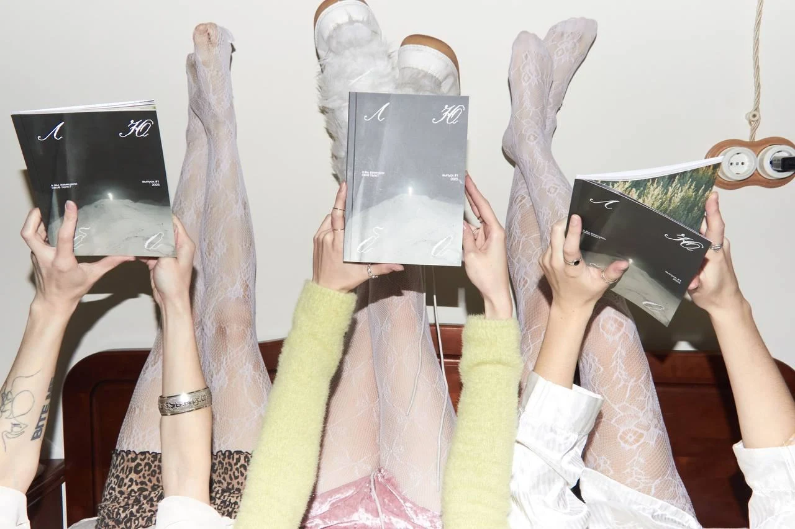
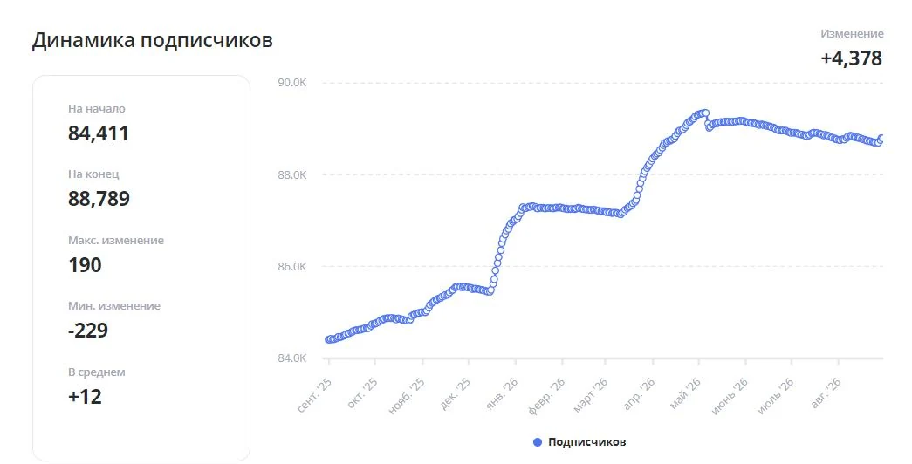
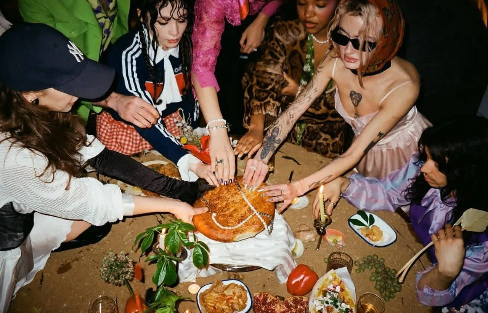

Главный редактор и креативный директор
любо · печатное и онлайн медиа

Запустила медиа с нуля
- экземпляров журнала
- 900
- книжных в 6 городах
- 10+
- гостей на запуске
- 400+
- подписчиков
- 3000+
любо · печатное и онлайн медиа

Запустила медиа с нуля
AMLAB.ME · школа фотографии

Разработала стратегию коммуникации бренда в соцсетях и систему работы команды
kiki · культурное гастро-пространство

Усиливала позиционирование и привлекала гостей в пространство